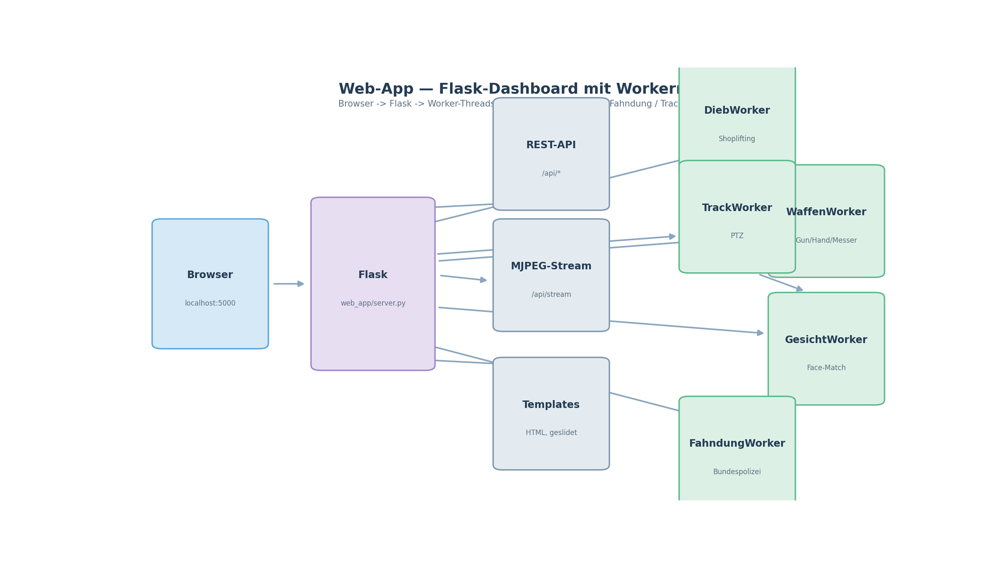

UtutCam — Web-App (Flask Dashboard + REST-API)¶
1. Überblick¶
Die Web-App bündelt alle UtutCam-Module in einem Browser-Dashboard. Ein Flask-Server startet parallele Worker-Threads für Dieb-, Waffen-, Gesichts- und Fahndungs-Erkennung, liefert Live-Video (MJPEG) und eine komplette REST-API zur Steuerung.
Browser ──► Flask (web_app/server.py) ──► Worker-Threads
│ ├─ DiebWorker
REST-API /api/* │ ├─ WaffenWorker
MJPEG /api/stream│ ├─ GesichtWorker
│ ├─ FahndungWorker
└────────────────────────┴─ TrackWorker (PTZ)

Simulation: web_app_simulation.mp4
(~7 s) — Dashboard-Simulation: Worker starten nacheinander (Dieb, Waffen,
Gesicht, Fahndung, Track), das Live-Video-Fenster läuft und ein
Waffen-Alarm erscheint als Ereignis-Banner.
2. Startbefehl¶
cd C:\Users\youss\Desktop\UtutCam
C:\Users\youss\AppData\Local\Python\pythoncore-3.14-64\python.exe web_app\server.py
Danach im Browser http://localhost:5000 öffnen (der Serverlog zeigt die
genaue Adresse/Port).
3. Seiten¶
| URL-Seite | Inhalt |
|---|---|
übersicht |
Startseite mit Status-Karten |
auto_track |
Personenverfolgung (PTZ) steuern/anschauen |
einstellungen |
Config anpassen (data/settings.json) |
Fahndung |
Fahndungsliste + Live-Match |
Dieb_Erkennung |
Shoplifting-Live-Ansicht |
Waffen_erkennung |
Gun/Hand/Messer-Live-Erkennung |
Gesicht_erkennung |
Face-Matching + Personen |
Face_manager |
Gesichtsdatenbank verwalten |
Person_hinzufügen_Face_manager |
Formular zum Hinzufügen |
Die HTML-Seiten kommen aus C:\Users\youss\Desktop\UtutCam_Design und werden
mit web_app/prepare_pages.py in web_app/templates/ kopiert (inkl. der
Slider-Defaults für auto_track.html).
4. Worker (Hintergrund-Threads)¶
| Worker | Modul | Zweck |
|---|---|---|
DiebWorker |
dieb_erkennung |
erkennt Loitering/Diebstahl |
WaffenWorker |
waffen_erkennung |
erkennt Waffen/Hände |
GesichtWorker |
face_erkennung |
erkennt & matcht Gesichter |
FahndungWorker |
fahndung |
gleicht gegen Bundespolizei-Fahndung ab |
TrackWorker |
auto_track |
PTZ-Personenverfolgung |
Jeder Worker kann über die REST-API gestartet / gestoppt werden
(/api/module).
5. REST-API (Auszug)¶
| Endpoint | Methode | Beschreibung |
|---|---|---|
/api/config |
GET/POST | Einstellungen lesen/ändern |
/api/status |
GET | Status aller Worker |
/api/events |
GET | Event-Log (Alarme) |
/api/module |
POST | Modul starten/stoppen |
/api/fahndung |
GET | Fahndungsdaten |
/api/faces |
GET/POST | Gesichtsdatenbank |
/api/camera |
GET | Kamerastatus/Stream-Info |
/api/alarm |
POST | Alarm auslösen |
/api/ptz |
POST | PTZ steuern (left/right) |
/api/stream |
GET | MJPEG-Live-Stream |
/api/frame |
GET | Einzelbild (Screenshot) |
6. Einstellungen¶
core/app_config.py liefert die Standardwerte; gespeichert wird in
data/settings.json. load_config()/save_config() kümmern sich um Laden,
Zusammenführen und Sichern (bei beschädigter Datei: fallback auf Defaults).
7. Verwandte Dateien¶
web_app/server.py— Flask-Server + Workerweb_app/prepare_pages.py— kopiert Design-HTML in templatescore/app_config.py— Config-Layerdocs/*.md— Modul-Dokumentationen (Auto Track, Gesicht, Waffen, Dieb, Fahndung)